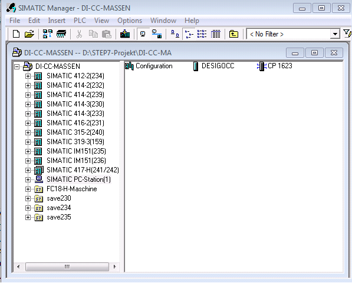
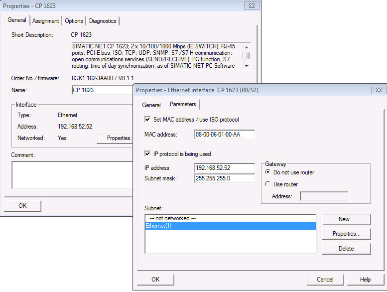
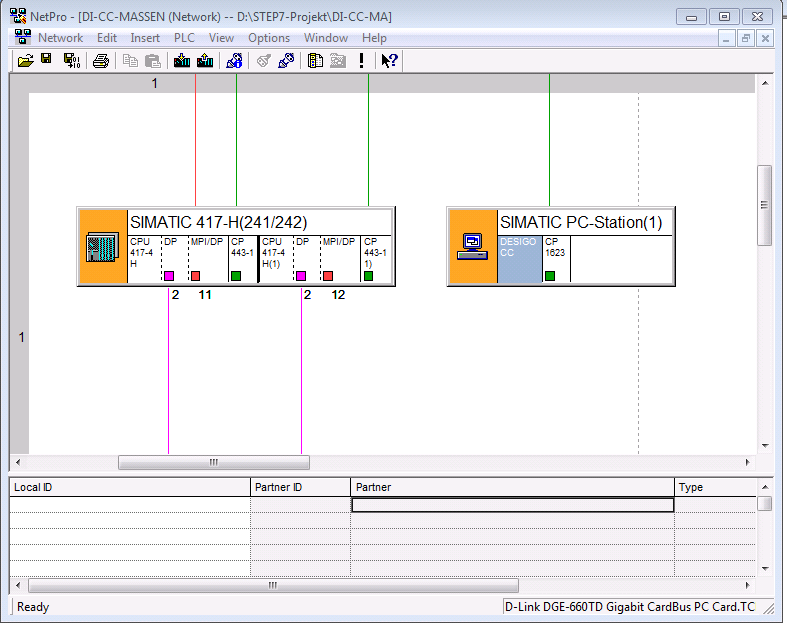
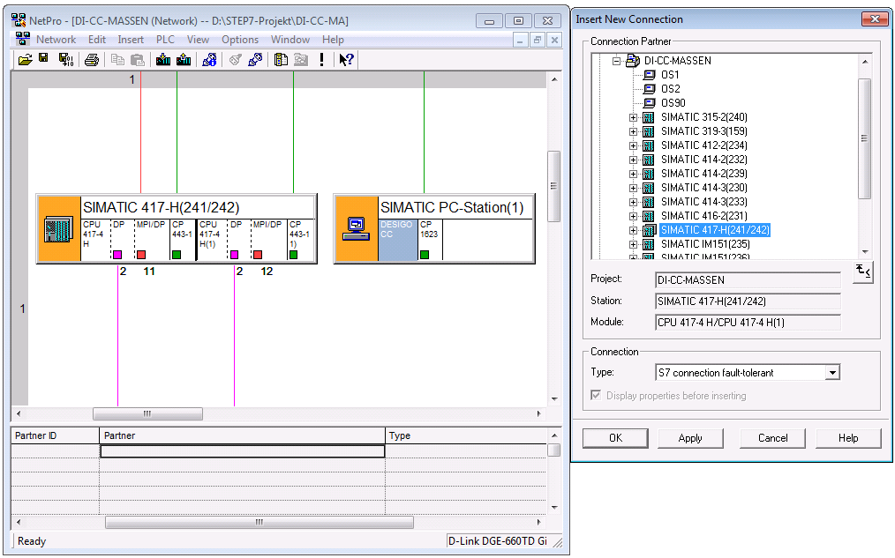
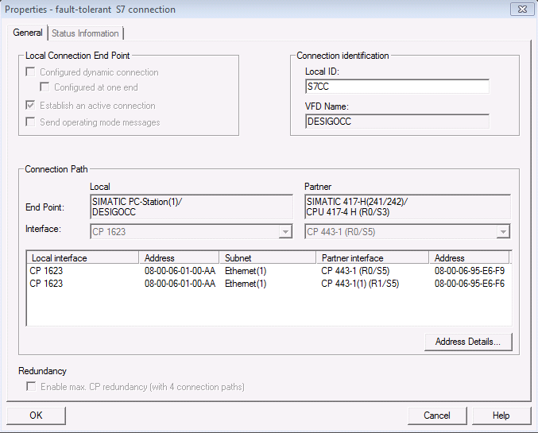
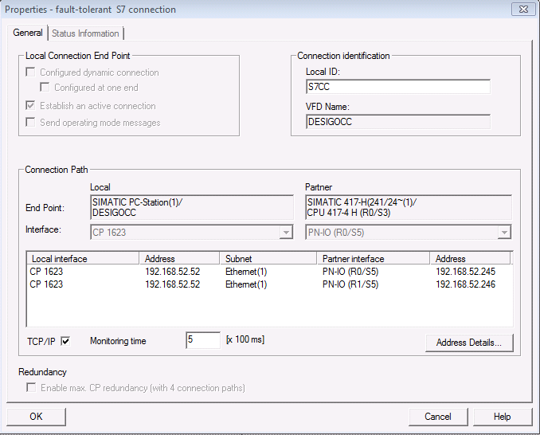
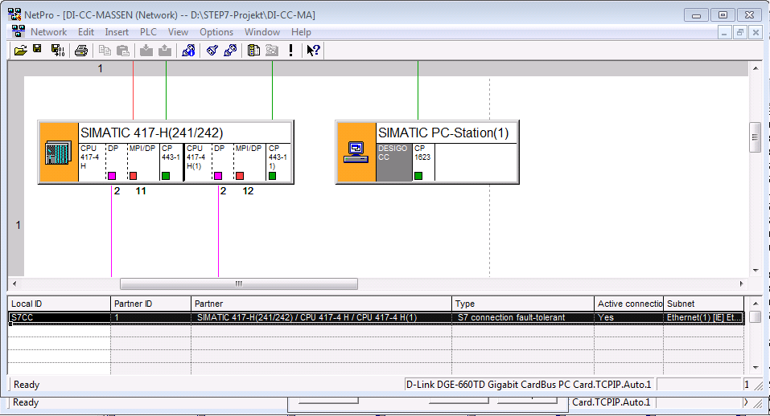
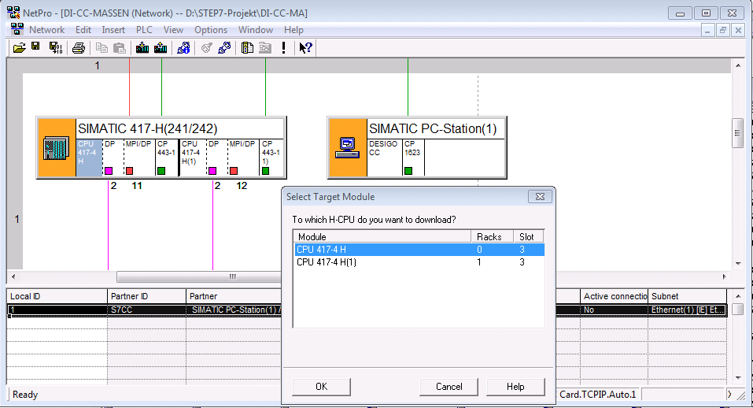

(Optional) Configure S7 RedConnect (HardNet-IE)
In order to connect computers to SIMATIC S7-400H via redundant Industrial Ethernet, it is necessary to configure the S7-RedConnect driver. S7-RedConnect allows for integrating computers into redundant, parallel Ethernet structures based on the Parallel Redundancy Protocol (PRP) functionality.
Configuring a Named Connection (CP1623)
The CP 1623 is a network adapter with a dedicated microcontroller for Industrial Ethernet in PCI Express standard format for applications with high data rates, large quantity structures or high requirements for computer resources.
It is possible to communicate with the fault-tolerant S7-400H system in conjunction with the S7-RedConnect software. The fault-tolerant S7 communication is established via a standard connection and a standby connection. These are monitored during operation and switched in the event of a fault. With S7-RedConnect, these connections are invisible to the PC application. Fault detection, changeover (if required), communication monitoring, and synchronization are all invisible to the application.

NOTE:
Fault-tolerant S7 connections are only available at CP1613 (6GK1161-3AA00), CP1613 A2 (6GK1161-3AA01), and CP1623 (6GK1162-3AA00). If using a CP1613 A2 or CP1623, these modules must be configured as CP1613 in the STEP7 hardware configuration. A regular network card cannot be used.
- SIMATIC NET is installed and licensed on the Desigo CC computer (Hardnet-IE S7, Hardnet-IE S7-RedConnect).
- Hardware is installed on the Desigo CC computer (CP1623).
- SIMATIC Manager is installed and running on the STEP7 engineering computer.
- The SIMATIC S7400H-machine is already configured.
- On the STEP7 engineering computer, insert a SIMATIC PC-Station in the STEP7 project. The SIMATIC PC-Station consists of a user application SW 8.1.2, for example, DESIGOCC, and the CP1623.

- In the SIMATIC Manager window:
a. Double-click CP1623.
b. Enter the IP address of the SIMATIC PC-Station.
c. Enter the MAC address of the SIMATIC PC-Station.
NOTE: The MAC address is important if you communicate with an old CP443 because the fault-tolerant connection only works with a MAC address. The MAC address must be unique.
- Configure the fault-tolerant connection between the S7400H-machine and the SIMATIC PC-Station.
- To open NetPro, do the following:
a. In the project, select CPU.
b. Double-click the connections. - The NetPro windows displays.

- Select the application Desigo CC and add a new connection.

a. In the Connection Partner list, select a partner.
b. In the Type drop-down list, select S7 connection fault-tolerant.
c. Click OK. - The Properties – fault-tolerant S7 connection window displays.
- Select the General tab.
a. Select the Connection Identification section.
b. Enter a name in the Local ID field, for example, S7CC.
c. Enter a name in the VFD Name field, for example, DESIGOCC.
d. Click OK.
NOTE: From the old CP443 (for example, C443-1EX11), the fault-tolerant connection can only be configured with a MAC address. From CP443-1EX30 and CP443-1GX30 or CPU400H with PN interface, a fault-tolerant connection can be configured with an IP address.
Example with a CP4431EX30:
- Open NetPro.
a. Select the menu Network.
b. Click Save and Compile. - A fault-tolerant S7 connection to the S7400H-machine is created.

- In the STEP7 Manager, select the menu Options > Configure the PG/PC interface and make the changes according to your requirements.
- Open NetPro and do the following:
a. Select the PLC.
b. Select the menu PLC.
c. Download the selected stations.